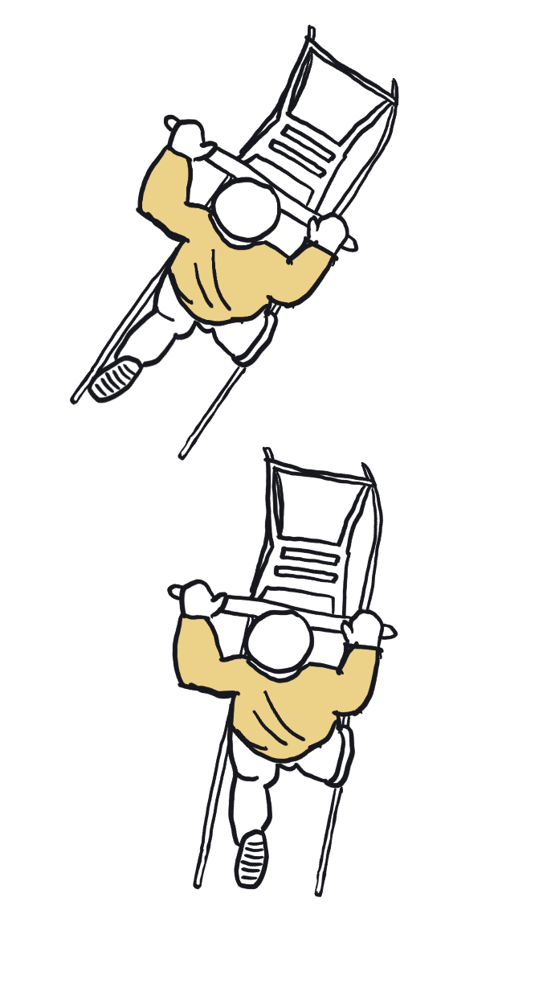

Sävar sparkfest 260207
Det är nu hög tid att anmäla er till 2026 års upplaga av Sparkfesten i Sävar! Det finns ett begränsat antal platser så vänta inte för länge! Först till kvarn! Info kring hur anmälan sker finns i inbjudan.
Just nu finns det plats för 72 personer till! (Uppdateras tyyyp varje kväll)
Hur funkar det?
Alla som anmält sig kommer få bjuda på antingen förrätt, varmrätt eller efterrätt. Vilken av dessa rätter man ska laga får man veta några veckor innan eventet. Ni kommer alltså ta emot mellan 4-6 gäster och bjuda dessa på mat. Till de andra två rätterna kommer ni få sparka hem till helt andra personer. Kanske början på en ny vänskap :)
Klädkod
I år har sparkfesten en klädkod i form av färgtema. Varje par väljer själva en färg som ni gemensamnt klär er i. Vi hoppas ni går all-in!
Tips: örhängen, manchetknappar, bälten, ögonskugga... bara fantasin sätter gränser!
Specialkost
Maila oss på info@sparkfesten.se i samband med anmälan om du/ni behöver någon specialkost.
Övriga frågor
Ni kan nå oss via mailen info@sparkfesten.se om ni har några frågor eller funderingar.
Hoppas vi ses!